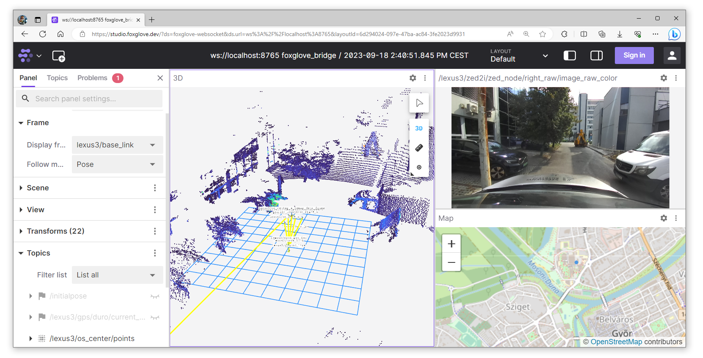
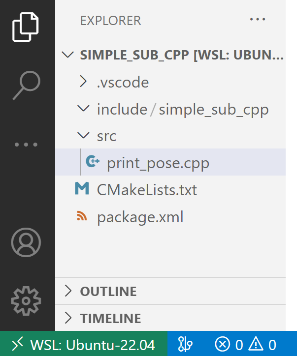
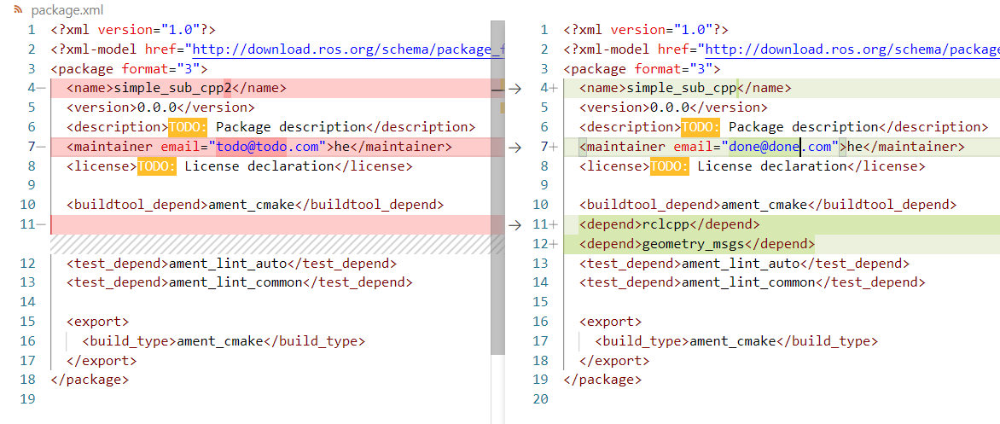

Gyakorlat¶
A gyakorlat Ubuntu 22.04 ROS humble, Windows 10/11 WSL humble mellett működik. A különböző verziók telepítésének leírása itt található.
Előzetes ellenőrzés
Otthoni gépen a gyakorlat előtt érdemes ellenőrizni, hogy a megfelelő ROS 2 szoftvercsomagok telepítve vannak-e.
sudo apt install ros-humble-rosbag2 ros-humble-rosbag2-storage-mcap
Gépteremben is ellenőrizzük a check_all.sh segítségével:
cd /mnt/kozos/script
./bag_mcap.sh
./check_all.sh
Előkészületek¶
Az előző gyakorlaton megismerkedtünk a következő rosbag-gel (ROS 2-ben a formátum már .mcap):

Előkészületként nézzük meg, hogy létezik-e a C:\temp könyvtár
test -d "/mnt/c/temp" && echo Letezik || echo Nem letezik
ls /mnt/c/temp
- Ha nem létezik (
No such file or directory), akkor hozzuk létre:mkdir /mnt/c/temp - Ha létezik, akkor nincs teendőnk, lépjünk a következő lépésre, másoljuk át ide az
.mcapfájlokat
Tanteremben a másolás a következő parancsok egyike legyen:
rsync -avzh --progress /mnt/kozos/measurement_files/lexus3sample01.mcap /mnt/c/temp/
rsync -avzh --progress /mnt/kozos/measurement_files/lexus3sample02.mcap /mnt/c/temp/
rsync -avzh --progress /mnt/kozos/measurement_files/lexus3sample03.mcap /mnt/c/temp/
rsync -avzh --progress /mnt/kozos/measurement_files/lexus3sample04.mcap /mnt/c/temp/
rsync -avzh --progress /mnt/kozos/measurement_files/lexus3sample05.mcap /mnt/c/temp/
Otthon a következő linkről (zöld gomb), vagy parancsként wget-el lehet letölteni:
wget -O lexus3sample02.mcap https://laesze-my.sharepoint.com/:u:/g/personal/herno_o365_sze_hu/EakTOhcjblNInqjRMfaGVmsB0diDv0SWpXw9rwo0MD7f3w?download=1
Listázzuk a megfelelő átmásolt .mcap fájl alap információit, hasonlóan:
ros2 bag info /mnt/c/temp/lexus3sample06.mcap
closing.
Files: /mnt/c/temp/lexus3sample06.mcap
Bag size: 286.7 MiB
Storage id: mcap
Duration: 3.367s
Start: Jul 18 2023 15:37:09.211 (1689687429.211)
End: Jul 18 2023 15:38:03.314 (1689687483.314)
Messages: 29598
Topic information:
Topic: /lexus3/zed2i/zed_node/right_raw/image_raw_color/compressed | Type: sensor_msgs/msg/CompressedImage
Topic: /lexus3/os_left/points | Type: sensor_msgs/msg/PointCloud2
Topic: /lexus3/os_right/points | Type: sensor_msgs/msg/PointCloud2
Topic: /lexus3/os_center/imu | Type: sensor_msgs/msg/Imu
Topic: /tf_static | Type: tf2_msgs/msg/TFMessage
Topic: /lexus3/os_center/points | Type: sensor_msgs/msg/PointCloud2
Topic: /tf | Type: tf2_msgs/msg/TFMessage
Topic: /lexus3/gps/duro/mag | Type: sensor_msgs/msg/MagneticField
Topic: /lexus3/gps/duro/imu | Type: sensor_msgs/msg/Imu
Topic: /lexus3/gps/duro/status_string | Type: std_msgs/msg/String
Topic: /lexus3/gps/duro/current_pose | Type: geometry_msgs/msg/PoseStamped
Játsszuk vissza az .mcap fájlt¶
A következőken a mérésadatfájlt visszajátsszuk és ellenőrizzük, hogy milyen adatok jelennek meg, milyen típusban és sebességgel. A --loop kapcsoló a végtelen ismétlést, a --clock kapcsoló pedig egy /clock topic hirdetéséért felel, ehhez igazítja a lejátszást.
ros2 bag play /mnt/c/temp/lexus3sample06.mcap --clock --loop
ros2 bag play /mnt/c/temp/lexus3sample06.mcap --clock --loop --rate 0.2
A következő topic-ok jelennek meg:
ros2 topic list
/clock
/events/read_split
/lexus3/gps/duro/current_pose
/lexus3/gps/duro/imu
/lexus3/gps/duro/mag
/lexus3/gps/duro/status_string
/lexus3/os_center/imu
/lexus3/os_center/points
/lexus3/os_left/points
/lexus3/os_right/points
/lexus3/zed2i/zed_node/right_raw/image_raw_color
/parameter_events
/rosout
/tf
/tf_static
A ros2 topic hz az adott topic frekvenciáját mutatja. A pozíció ebben az esetben ~20Hz.
ros2 topic hz /lexus3/gps/duro/current_pose
average rate: 20.133
min: 0.002s max: 0.101s std dev: 0.03451s window: 22
ROS 2 időkezelés¶
Az ROS idő kezelésre a Unix-időt, vagy a POSIX-időt használja. Ez a UTC (greenwichi idő) szerinti 1970. január 1. 00:00:00 óta eltelt másodpercek és nanoszekundumok számát jelenti (int32 sec, int32 nsec). Ez egyrészt relatív kis helyet foglal a memóriában, másrészt könnyen számolható két időpont között eltelt idő, mégpedig egy egyszerű kivonással.
Hátránya, hogy nem túl intuitív, nem olvasható az ember számára. Pl. a Foxglove Studio ezért is gyakran átalakítja olvashatóbb formátumra.


A másodpercek és nanoszekundumok a következőképp képzelhetők el:
import rclpy
current_time = node.get_clock().now()
print(current_time.to_msg())
Output:
sec=1694595162, nanosec=945886859
Az időbélyeg több helyen is szerepet kap:
ros2 topic echo /clock --once
clock:
sec: 1689687476
nanosec: 770421827
ros2 topic echo --once /lexus3/gps/duro/current_pose
header:
stamp:
sec: 1694595162
nanosec: 945886859
frame_id: map
pose:
position:
x: 640142.9676535318
y: 5193606.439717201
z: 1.7999999523162842
orientation:
x: 0.008532664424537166
y: 0.0018914791588597107
z: 0.44068499630505714
w: 0.8976192678279703
Ha szeretnénk átválatni a másodperceket és nanoszekundumokat, azt a következő módon tehetjük meg:
from datetime import datetime
current_time_float = current_time.to_msg().sec + current_time.to_msg().nanosec / 1e9 # 1e9 is 1,000,000,000: nanosec to sec
print("As a float:\t%.5f" % (current_time_float))
print("ISO format:", end="\t")
print(datetime.utcfromtimestamp(current_time_float).isoformat())
Output:
As a float: 1694595162.94589
ISO format: 2023-09-13T08:52:42.945887
Emlékeztető: a nanoszekundum a másodperc egy milliárdodrésze (10^-9 s).
Global Navigation Satellite System (GNSS) / Global Positioning System (GPS)¶
A köveztkezőkben átnézünk pár jellemző szenzort (GPS, kamera, LIDAR) és azok topic-jait, node-jait (driver package-ekbe szervezve). Vessünk egy pillantást a saját fejlesztésű Duro GPS (GNSS) driverre: github.com/szenergy/duro_gps_driver. A GPS-t etherneten a számítógéphez csatlakoztatva, az ROS drivert indítva a következő topicokat fogja hirdetni:
| Topic | Type |
|---|---|
/gps/duro/current_pose |
[geometry_msgs/PoseStamped] |
/gps/duro/fix |
[sensor_msgs/NavSatFix] |
/gps/duro/imu |
[sensor_msgs/Imu] |
/gps/duro/mag |
[sensor_msgs/MagneticField] |
/gps/duro/odom |
[nav_msgs/Odometry] |
/gps/duro/rollpitchyaw |
[geometry_msgs/Vector3] |
/gps/duro/status_flag |
[std_msgs/UInt8] |
/gps/duro/status_string |
[std_msgs/String] |
/gps/duro/time_ref |
[sensor_msgs/TimeReference] |
Inertial Measurement Unit (IMU)¶
Jellemző ROS 2 topic típusok: sensor_msgs/msg/Imu, sensor_msgs/msg/MagneticField
ros2 topic echo --once /lexus3/gps/duro/imu
header:
stamp:
sec: 1695039048
nanosec: 44466475
frame_id: duro
orientation:
x: 0.0
y: 0.0
z: 0.7071067811865475
w: 0.7071067811865476
orientation_covariance:
- [0.0, 0.0, 0.0, 0.0, 0.0, 0.0, 0.0, 0.0, 0.0]
angular_velocity:
x: 0.01330030487804878
y: 0.015893864329268294
z: 0.037307355182926834
angular_velocity_covariance:
- [0.0, 0.0, 0.0, 0.0, 0.0, 0.0, 0.0, 0.0, 0.0]
linear_acceleration:
x: -0.5291185668945312
y: 0.031124621582031248
z: -9.610325463867188
linear_acceleration_covariance:
- [0.0, 0.0, 0.0, 0.0, 0.0, 0.0, 0.0, 0.0, 0.0]
Kamera¶
Jellemző ROS 2 topic típusok: sensor_msgs/msg/Image, sensor_msgs/msg/CameraInfo
ros2 topic echo --once /lexus3/zed2i/zed_node/right_raw/image_raw_color
header:
stamp:
sec: 1695039047
nanosec: 340698516
frame_id: zed2i_right_camera_optical_frame
height: 720
width: 1280
encoding: bgra8
is_bigendian: 0
step: 5120
data: 21,66,93,255,21,66,94,255,25,69,94,255,14,63,90,255,31,55,80,255,19,49,75,255,26,55,76,255,24,57,80,255,35,51,72,255,30,52,74,255,57,73,88,255,55,74,90,255,64,74,93,255,52,66,86,255,56,61,76,255,25,34,48,255,25,31,52,255,16,24,43,255,14,22,41,255,19,27,46,255,13,20,38,255,23,28,45,255,31,41,65,255,36,37,59,255,23,59,82,255,45,71,91,255,51,84,116,255,70,94,122,255,57,105,141,255,42,84,117,255,42,90,126,255,36,81,116,255,..
LIDAR¶
Jellemző ROS 2 topic típusok: sensor_msgs/msg/PointCloud2, sensor_msgs/msg/LaserScan
ros2 topic echo --once /lexus3/os_center/points
header:
stamp:
sec: 1695039048
nanosec: 390894137
frame_id: lexus3/os_center_a_laser_data_frame
height: 64
width: 1024
fields:
- name: x, y, z, intensity, t, reflectivity, ring, ambient, range
data: 0,0,0,0,0,0,0,0,0,0,0,0,0,0,128,63,0,0,16,65,96,211,241,2,0,0,0,0,12,3,0,0,0,0,0,0,0,0,0,0,0,0,0,0,0,0,0,0,0,0,0,0,0,0,0,0,0,0,0,0,0,0,128,63,0,0,16,65,116,145,242,2,0,0,0,0,0,3,0,0,0,0,0,0,0,0,0,0,0,0,0,0,0,0,0,0,0,0,0,0,0,0,0,0,0,0,0,0,0,0,128,63,0,0,32,65,18,92,243,2,0,0,0,0,253,2,0,0,...,
Vizualizáció¶
RVIZ2¶
ros2 run rviz2 rviz2
Alakítsunk ki hasonló elrendezést:

Foxglove studio¶
ros2 launch foxglove_bridge foxglove_bridge_launch.xml port:=8765

Alakítsunk ki hasonló elrendezést:

Forrás: foxglove.dev/blog/introducing-foxglove-studios-new-navigation
Hozzuk létre a simple_sub_cpp package-t¶
A következőkben egy egyszerű subscriber node fog feliratkozni geometry_msgs/PoseStamped üzenetekre, majd kiírni az X és az Y koordinátákat. A gyakorlat a hivatalos ROS 2 tutorialokon alapszik felépítését tekintve.
Nyissunk egy új terminált, és source-oljuk a telepítést, hogy a ros2 parancsok működjenek.
Navigáljunk az már létrehozott ros2_ws könyvtárba.
Fontos, hogy a csomagokat az src könyvtárban kell létrehozni, nem a munkaterület gyökerében. Tehát navigáljunk a ros2_ws/src mappába, és futtassuk a package létrehozó parancsot:
cd ~/ros2_ws/src
ros2 pkg create --build-type ament_cmake simple_sub_cpp
A terminál egy üzenetet küld vissza, amely megerősíti a simple_sub_cpp csomag és az összes szükséges fájl és mappa létrehozását.
Írjuk meg a subscriber node-ot (print_pose.cpp >> simple_sub_node)¶
Lépjünk a ros2_ws/src/simple_sub_cpp/src mappába.
cd ~/ros2_ws/src/simple_sub_cpp/src
Ez az a könyvtár minden CMake package-ben, ahová a forrásfájlok tartoznak (pl. .cpp kiterjesztéssel).
Töltsük le a példa feliratkozó kódját:
wget -O print_pose.cpp https://raw.githubusercontent.com/sze-info/arj_packages/main/etc/print_pose.cpp
Ez a parancs létrehozta a print_pose.cpp fájlt.
Lépjünk vissza egy szinttel: cd ~/ros2_ws/src/simple_sub_cpp könyvtárba, ahol a CMakeLists.txt és a package.xml fájlok már létrejöttek.
Nyissuk meg pl. VS code segítségével a mappát: code . parancs. Itt a . a code után az aktuális mappát jelenti. Tipp: ha nem a könyvtárban állnánk, akkor is lehetséges teljes könyvtárat megnyitni, ami később pár dolgot egyszerűsít:
code ~/ros2_ws/src/simple_sub_cpp/

// ros2 topic type /lexus3/gps/duro/current_pose
// geometry_msgs/msg/PoseStamped
// ros2 interface show geometry_msgs/msg/PoseStamped
#include <memory>
#include "rclcpp/rclcpp.hpp"
#include "geometry_msgs/msg/pose_stamped.hpp"
using std::placeholders::_1;
class SimplePoseSub : public rclcpp::Node
{
public:
SimplePoseSub() : Node("simple_pose_sub")
{
sub1_ = this->create_subscription<geometry_msgs::msg::PoseStamped>("/lexus3/gps/duro/current_pose", 10, std::bind(&SimplePoseSub::topic_callback, this, _1));
}
private:
void topic_callback(const geometry_msgs::msg::PoseStamped &msg) const
{
RCLCPP_INFO(this->get_logger(), "x: %.3f, y: %.3f", msg.pose.position.x, msg.pose.position.y);
}
rclcpp::Subscription<geometry_msgs::msg::PoseStamped>::SharedPtr sub1_;
};
int main(int argc, char *argv[])
{
rclcpp::init(argc, argv);
rclcpp::spin(std::make_shared<SimplePoseSub>());
rclcpp::shutdown();
return 0;
}
Python megfelelője
A C++ kód python verziója szintén elérhető a github.com/sze-info/arj_packages címen. Érdemes összehasonlítani a C++ és a python kódokat.
Függőségek hozzáadása¶
Mindig érdemes kitölteni a <description>, <maintainer> és <license> tag-eket:
<description>Examples of minimal publisher/subscriber using rclcpp</description>
<maintainer email="you@email.com">Your Name</maintainer>
<license>Apache License 2.0</license>
Adjunk hozzá egy új sort az ament_cmake buildtool függősége után, és illesszük be a következő függőségeket a node include utasításainak megfelelően:
<depend>rclcpp</depend>
<depend>geometry_msgs</depend>
Ez deklarálja, hogy a pacakge-nek szükséges az rclcpp és a geometry_msgs fordításkor és futtatáskor.
CMakeLists.txt¶
Most nyissuk meg a CMakeLists.txt fájlt.
A meglévő find_package(ament_cmake REQUIRED) függőség alá adjuk hozzá a következő sorokat:
find_package(rclcpp REQUIRED)
find_package(geometry_msgs REQUIRED)
Ezután adjuk hozzá a végrehajtható fájlt (ez most a print_pose.cpp-ből fog csak állni), és nevezzük el simple_sub_node-nak, hogy az ros2 run használatával futtassa a node-ot:
add_executable(simple_sub_node src/print_pose.cpp)
ament_target_dependencies(simple_sub_node rclcpp geometry_msgs)
Végül az install(TARGETS...) részt adjuk hozzá, hogy az ros 2 megtalálja a futtatható állományt, amit lefordítottunk:
install(TARGETS
simple_sub_node
DESTINATION lib/${PROJECT_NAME})
A CMakeLists.txt megtisztítható néhány felesleges szakasz és megjegyzés eltávolításával, így a következőképpen néz ki:
cmake_minimum_required(VERSION 3.8)
project(simple_sub_cpp)
# Default to C++14
if(NOT CMAKE_CXX_STANDARD)
set(CMAKE_CXX_STANDARD 14)
endif()
if(CMAKE_COMPILER_IS_GNUCXX OR CMAKE_CXX_COMPILER_ID MATCHES "Clang")
add_compile_options(-Wall -Wextra -Wpedantic)
endif()
find_package(ament_cmake REQUIRED)
find_package(rclcpp REQUIRED)
find_package(geometry_msgs REQUIRED)
add_executable(simple_sub_node src/print_pose.cpp)
ament_target_dependencies(simple_sub_node rclcpp geometry_msgs)
install(TARGETS
simple_sub_node
DESTINATION lib/${PROJECT_NAME})
ament_package()
Összefoglalásképp, a következő módosításokat hajtottuk végre:


Build és futtatás¶
Success
Már buildelhető a package:
cd ~/ros2_ws/
colcon build --packages-select simple_sub_cpp
Futtassuk a szokásos módon:
source ~/ros2_ws/install/setup.bash
ros2 run simple_sub_cpp simple_sub_node
Kimenet:
[simple_pose_sub]: x: 697201.725, y: 5285679.845
[simple_pose_sub]: x: 697201.796, y: 5285679.548
[simple_pose_sub]: x: 697201.838, y: 5285679.251
[simple_pose_sub]: x: 697201.886, y: 5285678.949
Források¶
- docs.ros.org/en/humble/Tutorials/Beginner-Client-Libraries/Creating-Your-First-ROS2-Package.html
- docs.ros.org/en/humble/Tutorials/Beginner-Client-Libraries/Writing-A-Simple-Cpp-Publisher-And-Subscriber.html
- docs.ros.org/en/humble/Tutorials/Beginner-Client-Libraries/Writing-A-Simple-Py-Publisher-And-Subscriber.html